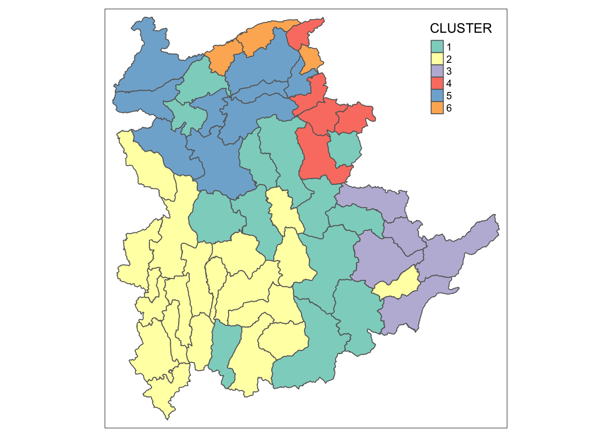
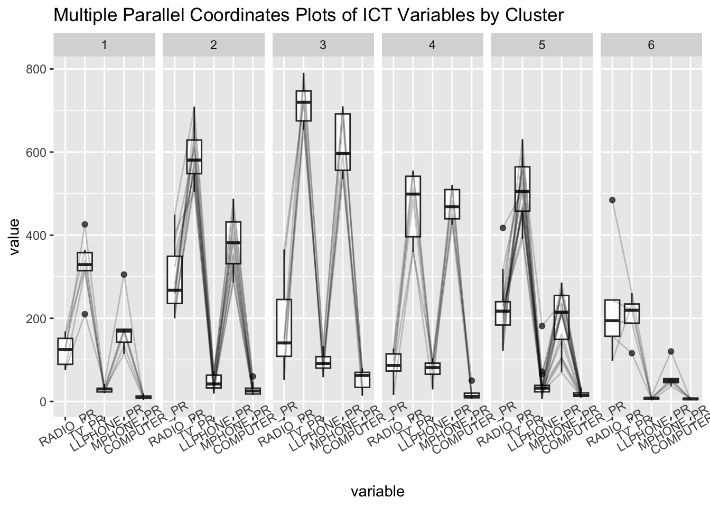

pacman::p_load(rgdal, spdep, tmap, sf, ClustGeo,
ggpubr, cluster, factoextra, NbClust,
heatmaply, corrplot, psych, tidyverse, GGally)Hands-on Exercise 9: Geographical Segmentation with Spatially Constrained Clustering Techniques
1.0 Overview
To do -
hierarchical cluster analysis; and
spatially constrained cluster analysis.
1.1 The analytical question
In geobusiness and spatial policy, it is a common practice to delineate the market or planning area into homogeneous regions by using multivariate data. In this hands-on exercise, we are interested to delineate Shan State, Myanmar into homogeneous regions by using multiple Information and Communication technology (ICT) measures, namely: Radio, Television, Land line phone, Mobile phone, Computer, and Internet at home.
1.2 The Data
Myanmar Township Boundary Data (i.e. myanmar_township_boundaries) : This is a GIS data in ESRI shapefile format. It consists of township boundary information of Myanmar. The spatial data are captured in polygon features.
Shan-ICT.csv: This is an extract of The 2014 Myanmar Population and Housing Census Myanmar at the township level.
1.3 Load Packages
2.0 Data Import and Preparation
2.1 Geospatial Data
shan_sf <- st_read(dsn = "data/geospatial",
layer = "mmr_polbnda_adm3_250k_mimu") %>%
filter(ST %in% c("Shan (East)", "Shan (North)", "Shan (South)")) %>%
select(c(2:7))Reading layer `mmr_polbnda_adm3_250k_mimu' from data source
`/Users/shambhavigoenka/Desktop/School/Geo/IS415-GAA/hands-on_ex/hands-on_ex09/data/geospatial'
using driver `ESRI Shapefile'
Simple feature collection with 330 features and 9 fields
Geometry type: MULTIPOLYGON
Dimension: XY
Bounding box: xmin: 92.1721 ymin: 9.696844 xmax: 101.17 ymax: 28.54554
Geodetic CRS: WGS 84shan_sfSimple feature collection with 55 features and 6 fields
Geometry type: MULTIPOLYGON
Dimension: XY
Bounding box: xmin: 96.15107 ymin: 19.29932 xmax: 101.17 ymax: 24.15907
Geodetic CRS: WGS 84
First 10 features:
ST ST_PCODE DT DT_PCODE TS TS_PCODE
1 Shan (East) MMR016 Monghsat MMR016D002 Monghsat MMR016006
2 Shan (East) MMR016 Monghsat MMR016D002 Mongton MMR016008
3 Shan (East) MMR016 Tachileik MMR016D003 Monghpyak MMR016010
4 Shan (East) MMR016 Tachileik MMR016D003 Mongyawng MMR016011
5 Shan (East) MMR016 Tachileik MMR016D003 Tachileik MMR016009
6 Shan (North) MMR015 Hopang MMR015D006 Hopang MMR015021
7 Shan (North) MMR015 Hopang MMR015D006 Mongmao MMR015008
8 Shan (North) MMR015 Lashio MMR015D001 Mongyai MMR015003
9 Shan (North) MMR015 Lashio MMR015D001 Tangyan MMR015004
10 Shan (North) MMR015 Matman MMR015D007 Matman MMR015024
geometry
1 MULTIPOLYGON (((99.17944 20...
2 MULTIPOLYGON (((98.50567 20...
3 MULTIPOLYGON (((100.0708 21...
4 MULTIPOLYGON (((101.1053 21...
5 MULTIPOLYGON (((100.3687 21...
6 MULTIPOLYGON (((98.88008 23...
7 MULTIPOLYGON (((98.94264 23...
8 MULTIPOLYGON (((98.04246 22...
9 MULTIPOLYGON (((98.27834 22...
10 MULTIPOLYGON (((98.9057 22....glimpse(shan_sf)Rows: 55
Columns: 7
$ ST <chr> "Shan (East)", "Shan (East)", "Shan (East)", "Shan (East)", "…
$ ST_PCODE <chr> "MMR016", "MMR016", "MMR016", "MMR016", "MMR016", "MMR015", "…
$ DT <chr> "Monghsat", "Monghsat", "Tachileik", "Tachileik", "Tachileik"…
$ DT_PCODE <chr> "MMR016D002", "MMR016D002", "MMR016D003", "MMR016D003", "MMR0…
$ TS <chr> "Monghsat", "Mongton", "Monghpyak", "Mongyawng", "Tachileik",…
$ TS_PCODE <chr> "MMR016006", "MMR016008", "MMR016010", "MMR016011", "MMR01600…
$ geometry <MULTIPOLYGON [°]> MULTIPOLYGON (((99.17944 20..., MULTIPOLYGON (((…2.2 Aspatial Data
ict <- read_csv ("data/aspatial/censuscommuniationtsp.csv") %>%
filter(name_st == "Shan") %>% #Filter Shan district values
select(-c(1,2)) %>% #Remove district columns
rename(`District Pcode` = "pcode_dt", #Rename columns
`District Name` = "name_dt",
`Township Pcode` = "pcode_ts",
`Township Name` = "name_ts",
`Total households` = "com_t",
`Radio` = "com_radio",
`Television` = "com_tv",
`Land line phone` = "com_lline",
`Mobile phone` = "com_mob",
`Computer` = "com_comp",
`Internet at home` = "com_int")summary(ict) District Pcode District Name Township Pcode Township Name
Length:55 Length:55 Length:55 Length:55
Class :character Class :character Class :character Class :character
Mode :character Mode :character Mode :character Mode :character
Total households Radio Television Land line phone
Min. : 3318 Min. : 148 Min. : 728 Min. : 20
1st Qu.:10791 1st Qu.: 1462 1st Qu.: 4837 1st Qu.: 351
Median :16332 Median : 2891 Median : 7407 Median : 695
Mean :21265 Mean : 4954 Mean :11615 Mean :1037
3rd Qu.:32152 3rd Qu.: 7417 3rd Qu.:15402 3rd Qu.:1232
Max. :94869 Max. :32301 Max. :68277 Max. :6981
Mobile phone Computer Internet at home
Min. : 150 Min. : 20.0 Min. : 8.0
1st Qu.: 2326 1st Qu.: 152.0 1st Qu.: 142.5
Median : 4439 Median : 252.0 Median : 321.0
Mean : 7321 Mean : 615.6 Mean : 829.4
3rd Qu.: 9802 3rd Qu.: 562.5 3rd Qu.: 723.5
Max. :50760 Max. :6796.0 Max. :9960.0 There are a total of eleven fields and 55 observation in the tibble data.frame.
2.3 Derive new variables
Use penetration rate (%) instead of absolute values to reduce bias
ict_derived <- ict %>%
mutate(`RADIO_PR` = `Radio`/`Total households`*1000) %>%
mutate(`TV_PR` = `Television`/`Total households`*1000) %>%
mutate(`LLPHONE_PR` = `Land line phone`/`Total households`*1000) %>%
mutate(`MPHONE_PR` = `Mobile phone`/`Total households`*1000) %>%
mutate(`COMPUTER_PR` = `Computer`/`Total households`*1000) %>%
mutate(`INTERNET_PR` = `Internet at home`/`Total households`*1000) %>%
rename(`DT_PCODE` =`District Pcode`,`DT`=`District Name`,
`TS_PCODE`=`Township Pcode`, `TS`=`Township Name`,
`TT_HOUSEHOLDS`=`Total households`,
`RADIO`=`Radio`, `TV`=`Television`,
`LLPHONE`=`Land line phone`, `MPHONE`=`Mobile phone`,
`COMPUTER`=`Computer`, `INTERNET`=`Internet at home`) summary(ict_derived) DT_PCODE DT TS_PCODE TS
Length:55 Length:55 Length:55 Length:55
Class :character Class :character Class :character Class :character
Mode :character Mode :character Mode :character Mode :character
TT_HOUSEHOLDS RADIO TV LLPHONE MPHONE
Min. : 3318 Min. : 148 Min. : 728 Min. : 20 Min. : 150
1st Qu.:10791 1st Qu.: 1462 1st Qu.: 4837 1st Qu.: 351 1st Qu.: 2326
Median :16332 Median : 2891 Median : 7407 Median : 695 Median : 4439
Mean :21265 Mean : 4954 Mean :11615 Mean :1037 Mean : 7321
3rd Qu.:32152 3rd Qu.: 7417 3rd Qu.:15402 3rd Qu.:1232 3rd Qu.: 9802
Max. :94869 Max. :32301 Max. :68277 Max. :6981 Max. :50760
COMPUTER INTERNET RADIO_PR TV_PR
Min. : 20.0 Min. : 8.0 Min. : 15.31 Min. :116.0
1st Qu.: 152.0 1st Qu.: 142.5 1st Qu.:131.31 1st Qu.:414.1
Median : 252.0 Median : 321.0 Median :199.94 Median :525.1
Mean : 615.6 Mean : 829.4 Mean :209.64 Mean :502.8
3rd Qu.: 562.5 3rd Qu.: 723.5 3rd Qu.:258.53 3rd Qu.:598.4
Max. :6796.0 Max. :9960.0 Max. :484.52 Max. :790.5
LLPHONE_PR MPHONE_PR COMPUTER_PR INTERNET_PR
Min. : 2.78 Min. : 36.42 Min. : 3.278 Min. : 1.041
1st Qu.: 23.17 1st Qu.:169.37 1st Qu.:11.256 1st Qu.: 8.617
Median : 35.31 Median :285.53 Median :15.765 Median : 20.417
Mean : 47.61 Mean :310.33 Mean :22.921 Mean : 28.727
3rd Qu.: 68.06 3rd Qu.:436.35 3rd Qu.:29.058 3rd Qu.: 39.925
Max. :181.49 Max. :709.77 Max. :79.606 Max. :113.287 3.0 Exploratory Data Analysis (EDA)
3.1 EDA using statistical graphics
View for Radio
ggplot(data=ict_derived,
aes(x=`RADIO`)) +
geom_histogram(bins=20,
color="black",
fill="light blue")To visualise outliers
ggplot(data=ict_derived,
aes(x=`RADIO`)) +
geom_boxplot(color="black",
fill="light blue")
View for Radio Penetration Rate
ggplot(data=ict_derived,
aes(x=`RADIO_PR`)) +
geom_histogram(bins=20,
color="black",
fill="light blue")
To visualise outliers
ggplot(data=ict_derived,
aes(x=`RADIO_PR`)) +
geom_boxplot(color="black",
fill="light blue")View All
Code
radio <- ggplot(data=ict_derived,
aes(x= `RADIO_PR`)) +
geom_histogram(bins=20,
color="black",
fill="light blue")
tv <- ggplot(data=ict_derived,
aes(x= `TV_PR`)) +
geom_histogram(bins=20,
color="black",
fill="light blue")
llphone <- ggplot(data=ict_derived,
aes(x= `LLPHONE_PR`)) +
geom_histogram(bins=20,
color="black",
fill="light blue")
mphone <- ggplot(data=ict_derived,
aes(x= `MPHONE_PR`)) +
geom_histogram(bins=20,
color="black",
fill="light blue")
computer <- ggplot(data=ict_derived,
aes(x= `COMPUTER_PR`)) +
geom_histogram(bins=20,
color="black",
fill="light blue")
internet <- ggplot(data=ict_derived,
aes(x= `INTERNET_PR`)) +
geom_histogram(bins=20,
color="black",
fill="light blue")
ggarrange(radio, tv, llphone, mphone, computer, internet,
ncol = 3,
nrow = 2)3.2 EDA using choropleth map
3.2.1 Join geospatial and aspatial data
shan_sf <- left_join(shan_sf,
ict_derived, by=c("TS_PCODE"="TS_PCODE"))
#store
write_rds(shan_sf, "data/rds/shan_sf.rds")Store as rds
shan_sf <- read_rds("data/rds/shan_sf.rds")3.2.2 Preparing a choropleth map
Quantile mapping
qtm(shan_sf, "RADIO_PR")View comparison
TT_HOUSEHOLDS.map <- tm_shape(shan_sf) +
tm_fill(col = "TT_HOUSEHOLDS",
n = 5,
style = "jenks",
title = "Total households") +
tm_borders(alpha = 0.5)
RADIO.map <- tm_shape(shan_sf) +
tm_fill(col = "RADIO",
n = 5,
style = "jenks",
title = "Number Radio ") +
tm_borders(alpha = 0.5)
tmap_arrange(TT_HOUSEHOLDS.map, RADIO.map,
asp=NA, ncol=2)Townships with relatively larger number of households are also showing relatively higher number of radio ownership.
Use jenks breaks
tm_shape(shan_sf) +
tm_polygons(c("TT_HOUSEHOLDS", "RADIO_PR"),
style="jenks") +
tm_facets(sync = TRUE, ncol = 2) +
tm_legend(legend.position = c("right", "bottom"))+
tm_layout(outer.margins=0, asp=0)Maps have less colour variation - data is more evenly distributed
4.0 Correlation Analysis
Check for multicollinearity
cluster_vars.cor = cor(ict_derived[,12:17])
corrplot.mixed(cluster_vars.cor,
lower = "ellipse",
upper = "number",
tl.pos = "lt",
diag = "l",
tl.col = "black")
COMPUTER_PR and INTERNET_PR are highly correlated
5.0 Hierarchy Cluster Analysis
5.1 Extracting clustering variables
Exclude INTERNET_PR due to high correlation with COMPUTER_PR
cluster_vars <- shan_sf %>%
st_set_geometry(NULL) %>%
select("TS.x", "RADIO_PR", "TV_PR", "LLPHONE_PR", "MPHONE_PR", "COMPUTER_PR")
head(cluster_vars,10) TS.x RADIO_PR TV_PR LLPHONE_PR MPHONE_PR COMPUTER_PR
1 Monghsat 119.2507 425.9850 31.081576 173.72194 19.726859
2 Mongton 130.5008 339.5895 31.067806 173.38871 13.816788
3 Monghpyak 405.0284 503.3252 42.497972 381.83293 25.141930
4 Mongyawng 140.7886 676.7271 91.358455 556.87369 13.782275
5 Tachileik 365.7527 722.7723 58.662703 678.33727 79.606084
6 Hopang 127.6748 555.2782 94.418688 452.74608 22.467903
7 Mongmao 120.0574 512.6855 85.495452 424.98803 11.297271
8 Mongyai 168.4424 364.2707 20.333133 135.12905 9.378752
9 Tangyan 223.8632 453.2753 22.594047 105.23021 12.065335
10 Matman 244.1230 219.4093 8.438819 45.20796 6.027728Change index to township name
row.names(cluster_vars) <- cluster_vars$"TS.x"
head(cluster_vars,10) TS.x RADIO_PR TV_PR LLPHONE_PR MPHONE_PR COMPUTER_PR
Monghsat Monghsat 119.2507 425.9850 31.081576 173.72194 19.726859
Mongton Mongton 130.5008 339.5895 31.067806 173.38871 13.816788
Monghpyak Monghpyak 405.0284 503.3252 42.497972 381.83293 25.141930
Mongyawng Mongyawng 140.7886 676.7271 91.358455 556.87369 13.782275
Tachileik Tachileik 365.7527 722.7723 58.662703 678.33727 79.606084
Hopang Hopang 127.6748 555.2782 94.418688 452.74608 22.467903
Mongmao Mongmao 120.0574 512.6855 85.495452 424.98803 11.297271
Mongyai Mongyai 168.4424 364.2707 20.333133 135.12905 9.378752
Tangyan Tangyan 223.8632 453.2753 22.594047 105.23021 12.065335
Matman Matman 244.1230 219.4093 8.438819 45.20796 6.027728Remove duplicate column
shan_ict <- select(cluster_vars, c(2:6))
head(shan_ict, 10) RADIO_PR TV_PR LLPHONE_PR MPHONE_PR COMPUTER_PR
Monghsat 119.2507 425.9850 31.081576 173.72194 19.726859
Mongton 130.5008 339.5895 31.067806 173.38871 13.816788
Monghpyak 405.0284 503.3252 42.497972 381.83293 25.141930
Mongyawng 140.7886 676.7271 91.358455 556.87369 13.782275
Tachileik 365.7527 722.7723 58.662703 678.33727 79.606084
Hopang 127.6748 555.2782 94.418688 452.74608 22.467903
Mongmao 120.0574 512.6855 85.495452 424.98803 11.297271
Mongyai 168.4424 364.2707 20.333133 135.12905 9.378752
Tangyan 223.8632 453.2753 22.594047 105.23021 12.065335
Matman 244.1230 219.4093 8.438819 45.20796 6.0277285.2 Data Standardisation
5.2.1 Min-Max standardisation
All values to range between 0 - 1
shan_ict.std <- normalize(shan_ict)
summary(shan_ict.std) RADIO_PR TV_PR LLPHONE_PR MPHONE_PR
Min. :0.0000 Min. :0.0000 Min. :0.0000 Min. :0.0000
1st Qu.:0.2472 1st Qu.:0.4420 1st Qu.:0.1141 1st Qu.:0.1974
Median :0.3935 Median :0.6064 Median :0.1820 Median :0.3700
Mean :0.4142 Mean :0.5734 Mean :0.2509 Mean :0.4068
3rd Qu.:0.5184 3rd Qu.:0.7151 3rd Qu.:0.3653 3rd Qu.:0.5939
Max. :1.0000 Max. :1.0000 Max. :1.0000 Max. :1.0000
COMPUTER_PR
Min. :0.0000
1st Qu.:0.1045
Median :0.1636
Mean :0.2573
3rd Qu.:0.3378
Max. :1.0000 5.2.2 Z-score standardisation
(Assumes normal distribution)
Mean and stdev are 0 and 1 respectively
shan_ict.z <- scale(shan_ict)
describe(shan_ict.z) vars n mean sd median trimmed mad min max range skew kurtosis
RADIO_PR 1 55 0 1 -0.09 -0.07 0.95 -1.84 2.60 4.44 0.59 -0.19
TV_PR 2 55 0 1 0.15 0.05 0.84 -2.52 1.88 4.40 -0.48 -0.29
LLPHONE_PR 3 55 0 1 -0.34 -0.12 0.64 -1.25 3.74 5.00 1.38 2.14
MPHONE_PR 4 55 0 1 -0.14 -0.05 1.16 -1.53 2.23 3.76 0.41 -0.74
COMPUTER_PR 5 55 0 1 -0.39 -0.17 0.60 -1.08 3.11 4.19 1.48 1.45
se
RADIO_PR 0.13
TV_PR 0.13
LLPHONE_PR 0.13
MPHONE_PR 0.13
COMPUTER_PR 0.135.2.3 Visualising the standardised clustering variables
Code
r <- ggplot(data=ict_derived,
aes(x= `RADIO_PR`)) +
geom_histogram(bins=20,
color="black",
fill="light blue") +
ggtitle("Raw values without standardisation")
shan_ict_s_df <- as.data.frame(shan_ict.std)
s <- ggplot(data=shan_ict_s_df,
aes(x=`RADIO_PR`)) +
geom_histogram(bins=20,
color="black",
fill="light blue") +
ggtitle("Min-Max Standardisation")
shan_ict_z_df <- as.data.frame(shan_ict.z)
z <- ggplot(data=shan_ict_z_df,
aes(x=`RADIO_PR`)) +
geom_histogram(bins=20,
color="black",
fill="light blue") +
ggtitle("Z-score Standardisation")
ggarrange(r, s, z,
ncol = 3,
nrow = 1)Code
r <- ggplot(data=ict_derived,
aes(x= `RADIO_PR`)) +
geom_density(color="black",
fill="light blue") +
ggtitle("Raw values without standardisation")
shan_ict_s_df <- as.data.frame(shan_ict.std)
s <- ggplot(data=shan_ict_s_df,
aes(x=`RADIO_PR`)) +
geom_density(color="black",
fill="light blue") +
ggtitle("Min-Max Standardisation")
shan_ict_z_df <- as.data.frame(shan_ict.z)
z <- ggplot(data=shan_ict_z_df,
aes(x=`RADIO_PR`)) +
geom_density(color="black",
fill="light blue") +
ggtitle("Z-score Standardisation")
ggarrange(r, s, z,
ncol = 3,
nrow = 1)5.3 Computing proximity matrix
proxmat <- dist(shan_ict, method = 'euclidean')#proxmat5.4 Computing hierarchical clustering
5.4.1 Perform hierarchical cluster analysis
Use ward.D method
hclust_ward <- hclust(proxmat, method = 'ward.D')plot(hclust_ward, cex = 0.6)5.4.2 Select Optimal clustering algorithm
m <- c( "average", "single", "complete", "ward")
names(m) <- c( "average", "single", "complete", "ward")
ac <- function(x) {
agnes(shan_ict, method = x)$ac
}
map_dbl(m, ac) average single complete ward
0.8365556 0.7006561 0.8983065 0.9488899 Ward’s method provides the strongest clustering structure among the four methods assessed hence Ward’s method will be used.
5.4.3 Determining Optimal Clusters
5.4.3.1 Gap Statistic Method
The gap statistic compares the total within intra-cluster variation for different values of k with their expected values under null reference distribution of the data. The estimate of the optimal clusters will be value that maximize the gap statistic (i.e., that yields the largest gap statistic). This means that the clustering structure is far away from the random uniform distribution of points.
set.seed(12345)
gap_stat <- clusGap(shan_ict,
FUN = hcut,
nstart = 25,
K.max = 10,
B = 50)
# Print the result
print(gap_stat, method = "firstmax")Clustering Gap statistic ["clusGap"] from call:
clusGap(x = shan_ict, FUNcluster = hcut, K.max = 10, B = 50, nstart = 25)
B=50 simulated reference sets, k = 1..10; spaceH0="scaledPCA"
--> Number of clusters (method 'firstmax'): 1
logW E.logW gap SE.sim
[1,] 8.401924 8.672479 0.2705551 0.04333897
[2,] 8.107732 8.367009 0.2592767 0.03924690
[3,] 7.965003 8.219640 0.2546364 0.03367975
[4,] 7.829605 8.093406 0.2638009 0.03782676
[5,] 7.695818 7.992070 0.2962516 0.03681358
[6,] 7.616339 7.898464 0.2821247 0.03975286
[7,] 7.551722 7.816837 0.2651150 0.04068218
[8,] 7.489050 7.742131 0.2530806 0.04244978
[9,] 7.403910 7.672548 0.2686377 0.04533739
[10,] 7.323138 7.607562 0.2844236 0.04679361Plot
fviz_gap_stat(gap_stat)With reference to the gap statistic graph above, the recommended number of cluster to retain is 1. However, it is not logical to retain only one cluster. By examine the gap statistic graph, the 6-cluster gives the largest gap statistic and should be the next best cluster to pick.
5.4.4 Interpreting the dendrograms
In the dendrogram displayed above, each leaf corresponds to one observation. As we move up the tree, observations that are similar to each other are combined into branches, which are themselves fused at a higher height.
The height of the fusion, provided on the vertical axis, indicates the (dis)similarity between two observations. The higher the height of the fusion, the less similar the observations are. Note that, conclusions about the proximity of two observations can be drawn only based on the height where branches containing those two observations first are fused. We cannot use the proximity of two observations along the horizontal axis as a criteria of their similarity.
plot(hclust_ward, cex = 0.6)
rect.hclust(hclust_ward,
k = 6,
border = 2:5)5.4.5 Visually-driven hierarchical clustering analysis
Transforming the data frame into a matrix
shan_ict_mat <- data.matrix(shan_ict)Plot interactive map
heatmaply(normalize(shan_ict_mat),
Colv=NA,
dist_method = "euclidean",
hclust_method = "ward.D",
seriate = "OLO",
colors = Blues,
k_row = 6,
margins = c(NA,200,60,NA),
fontsize_row = 4,
fontsize_col = 5,
main="Geographic Segmentation of Shan State by ICT indicators",
xlab = "ICT Indicators",
ylab = "Townships of Shan State"
)5.4.6 Mapping the clusters formed
groups <- as.factor(cutree(hclust_ward, k=6))Convert groups list to a matrix and append to shan_sf
shan_sf_cluster <- cbind(shan_sf, as.matrix(groups)) %>%
rename(`CLUSTER`=`as.matrix.groups.`)qtm(shan_sf_cluster, "CLUSTER")The choropleth map above reveals the clusters are very fragmented. The is one of the major limitation when non-spatial clustering algorithm such as hierarchical cluster analysis method is used.
6.0 Spatially Constrained Clustering: SKATER approach
6.1 Converting into SpatialPolygonsDataFrame
shan_sp <- as_Spatial(shan_sf)6.2 Computing Neighbour List
shan.nb <- poly2nb(shan_sp)
summary(shan.nb)Neighbour list object:
Number of regions: 55
Number of nonzero links: 264
Percentage nonzero weights: 8.727273
Average number of links: 4.8
Link number distribution:
2 3 4 5 6 7 8 9
5 8 9 19 5 4 4 1
5 least connected regions:
13 25 31 36 54 with 2 links
1 most connected region:
52 with 9 linksPlot neighbor list object, with coordinates applied to the original shan_sp (to extract the centroids of the polygons)
plot(shan_sp,
border=grey(.5))
plot(shan.nb,
coordinates(shan_sp),
col="blue",
add=TRUE)6.3 Computing minimum spanning tree
6.3.1 Calculating edge costs
lcosts <- nbcosts(shan.nb, shan_ict)For each observation, this gives the pairwise dissimilarity between its values on the five variables and the values for the neighbouring observation (from the neighbour list). Basically, this is the notion of a generalised weight for a spatial weights matrix.
Incorporate into weights object
shan.w <- nb2listw(shan.nb,
lcosts,
style="B")
summary(shan.w)Characteristics of weights list object:
Neighbour list object:
Number of regions: 55
Number of nonzero links: 264
Percentage nonzero weights: 8.727273
Average number of links: 4.8
Link number distribution:
2 3 4 5 6 7 8 9
5 8 9 19 5 4 4 1
5 least connected regions:
13 25 31 36 54 with 2 links
1 most connected region:
52 with 9 links
Weights style: B
Weights constants summary:
n nn S0 S1 S2
B 55 3025 74067.64 54827108 4953699826.3.2 Computing minimum spanning tree
Minimum spanning tree is computed by mean of the mstree()
shan.mst <- mstree(shan.w)Check class and dimension
class(shan.mst)[1] "mst" "matrix"dim(shan.mst)[1] 54 3Note that the dimension is 54 and not 55. This is because the minimum spanning tree consists on n-1 edges (links) in order to traverse all the nodes.
View
head(shan.mst) [,1] [,2] [,3]
[1,] 54 50 130.86698
[2,] 54 53 139.31874
[3,] 53 51 95.66782
[4,] 51 52 161.25991
[5,] 52 31 77.88441
[6,] 31 29 143.54182Plot - include observation numbers
plot(shan_sp, border=gray(.5))
plot.mst(shan.mst,
coordinates(shan_sp),
col="blue",
cex.lab=0.7,
cex.circles=0.005,
add=TRUE)6.4 Computing spatially constrained clusters using SKATER method
clust6 <- spdep::skater(edges = shan.mst[,1:2],
data = shan_ict,
method = "euclidean",
ncuts = 5) #n clusters - 1View
str(clust6)List of 8
$ groups : num [1:55] 3 3 2 2 2 2 2 3 3 3 ...
$ edges.groups:List of 6
..$ :List of 3
.. ..$ node: num [1:12] 29 31 52 51 35 14 53 54 55 36 ...
.. ..$ edge: num [1:11, 1:3] 35 52 51 14 54 54 53 51 29 31 ...
.. ..$ ssw : num 1790
..$ :List of 3
.. ..$ node: num [1:18] 25 7 4 22 6 17 24 15 20 12 ...
.. ..$ edge: num [1:17, 1:3] 4 6 17 20 15 22 15 7 24 4 ...
.. ..$ ssw : num 3475
..$ :List of 3
.. ..$ node: num [1:14] 45 42 9 19 8 23 28 2 46 18 ...
.. ..$ edge: num [1:13, 1:3] 42 28 19 23 45 9 23 2 23 8 ...
.. ..$ ssw : num 1850
..$ :List of 3
.. ..$ node: num [1:9] 49 44 48 39 43 37 47 41 40
.. ..$ edge: num [1:8, 1:3] 39 44 37 48 43 47 41 47 37 48 ...
.. ..$ ssw : num 905
..$ :List of 3
.. ..$ node: num 11
.. ..$ edge: num[0 , 1:3]
.. ..$ ssw : num 0
..$ :List of 3
.. ..$ node: num 38
.. ..$ edge: num[0 , 1:3]
.. ..$ ssw : num 0
$ not.prune : NULL
$ candidates : int [1:6] 1 2 3 4 5 6
$ ssto : num 12665
$ ssw : num [1:6] 12665 10593 9581 8855 8431 ...
$ crit : num [1:2] 1 Inf
$ vec.crit : num [1:55] 1 1 1 1 1 1 1 1 1 1 ...
- attr(*, "class")= chr "skater"The most interesting component of this list structure is the groups vector containing the labels of the cluster to which each observation belongs (as before, the label itself is arbitary). This is followed by a detailed summary for each of the clusters in the edges.groups list. Sum of squares measures are given as ssto for the total and ssw to show the effect of each of the cuts on the overall criterion.
Check cluster assignment
ccs6 <- clust6$groups
ccs6 [1] 3 3 2 2 2 2 2 3 3 3 5 2 1 1 2 2 2 3 3 2 3 2 3 2 2 2 2 3 1 3 1 2 2 2 1 1 4 6
[39] 4 4 4 3 4 4 3 3 4 4 4 1 1 1 1 1 1Plot pruned tree
plot(shan_sp, border=gray(.5))
plot(clust6,
coordinates(shan_sp),
cex.lab=.7,
groups.colors=c("red","green","blue", "brown", "pink"),
cex.circles=0.005,
add=TRUE)6.5 Visualising the clusters in choropleth map
groups_mat <- as.matrix(clust6$groups)
shan_sf_spatialcluster <- cbind(shan_sf_cluster, as.factor(groups_mat)) %>%
rename(`SP_CLUSTER`=`as.factor.groups_mat.`)
qtm(shan_sf_spatialcluster, "SP_CLUSTER")View hierarchical clustering and spatially constrained hierarchical clustering maps
Code
hclust.map <- qtm(shan_sf_cluster,
"CLUSTER") +
tm_borders(alpha = 0.5)
shclust.map <- qtm(shan_sf_spatialcluster,
"SP_CLUSTER") +
tm_borders(alpha = 0.5)
tmap_arrange(hclust.map, shclust.map,
asp=NA, ncol=2)7.0 Spatially Constrained Clustering: ClustGeo Method
The algorithm uses two dissimilarity matrices D0 and D1 along with a mixing parameter alpha, whereby the value of alpha must be a real number between [0, 1]. D0 can be non-Euclidean and the weights of the observations can be non-uniform. It gives the dissimilarities in the attribute/clustering variable space. D1, on the other hand, gives the dissimilarities in the constraint space. The criterion minimised at each stage is a convex combination of the homogeneity criterion calculated with D0 and the homogeneity criterion calculated with D1.
The idea is then to determine a value of alpha which increases the spatial contiguity without deteriorating too much the quality of the solution based on the variables of interest.
7.1 Ward-like hierarchical clustering: ClustGeo
nongeo_cluster <- hclustgeo(proxmat) #has to be type dist
plot(nongeo_cluster, cex = 0.5)
rect.hclust(nongeo_cluster,
k = 6,
border = 2:5)7.1.1 Mapping the clusters formed
groups <- as.factor(cutree(nongeo_cluster, k=6))
shan_sf_ngeo_cluster <- cbind(shan_sf, as.matrix(groups)) %>%
rename(`CLUSTER` = `as.matrix.groups.`)
qtm(shan_sf_ngeo_cluster, "CLUSTER")7.2 Spatially Constrained Hierarchical Clustering
Derive spatial distance matrix
dist <- st_distance(shan_sf, shan_sf)
distmat <- as.dist(dist) #convert df to distChoose a suitable value for the mixing parameter alpha
cr <- choicealpha(proxmat, distmat, range.alpha = seq(0, 1, 0.1), K=6, graph = TRUE)alpha = 0.3 will be used
clustG <- hclustgeo(proxmat, distmat, alpha = 0.3)Derive cluster object
groups <- as.factor(cutree(clustG, k=6))Join with shan_sf polygon feature
shan_sf_Gcluster <- cbind(shan_sf, as.matrix(groups)) %>%
rename(`CLUSTER` = `as.matrix.groups.`)Plot
qtm(shan_sf_Gcluster, "CLUSTER")
8.0 Visual Interpretation of Clusters
8.1 Visualising individual clustering variable
Clustering variable - RADIO_PR
ggplot(data = shan_sf_ngeo_cluster,
aes(x = CLUSTER, y = RADIO_PR)) +
geom_boxplot()
The boxplot reveals Cluster 3 displays the highest mean Radio Ownership Per Thousand Household. This is followed by Cluster 2, 1, 4, 6 and 5.
8.2 Multivariate Visualisation
Code
ggparcoord(data = shan_sf_ngeo_cluster,
columns = c(17:21),
scale = "globalminmax",
alphaLines = 0.2,
boxplot = TRUE,
title = "Multiple Parallel Coordinates Plots of ICT Variables by Cluster") +
facet_grid(~ CLUSTER) +
theme(axis.text.x = element_text(angle = 30))
The parallel coordinate plot above reveals that households in Cluster 4 townships tend to own the highest number of TV and mobile-phone. On the other hand, households in Cluster 5 tends to own the lowest of all the five ICT.
Summary
shan_sf_ngeo_cluster %>%
st_set_geometry(NULL) %>%
group_by(CLUSTER) %>%
summarise(mean_RADIO_PR = mean(RADIO_PR),
mean_TV_PR = mean(TV_PR),
mean_LLPHONE_PR = mean(LLPHONE_PR),
mean_MPHONE_PR = mean(MPHONE_PR),
mean_COMPUTER_PR = mean(COMPUTER_PR))# A tibble: 6 × 6
CLUSTER mean_RADIO_PR mean_TV_PR mean_LLPHONE_PR mean_MPHONE_PR mean_COMPUTE…¹
<chr> <dbl> <dbl> <dbl> <dbl> <dbl>
1 1 122. 329. 29.1 178. 10.7
2 2 296. 591. 44.2 380. 29.3
3 3 181. 715. 94.3 620. 52.0
4 4 84.8 472. 75.4 473. 18.5
5 5 222. 508. 40.0 199. 17.3
6 6 235. 204. 7.45 61.5 6.05
# … with abbreviated variable name ¹mean_COMPUTER_PR